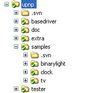
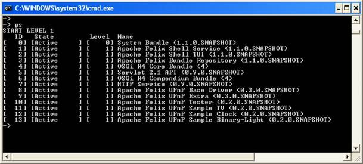
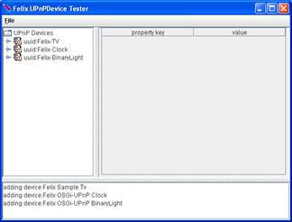
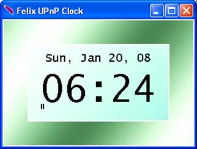
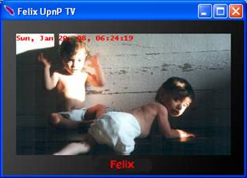
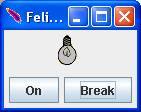

Getting Started
Assuming that, as described in Building Felix web page, you have already checked out the Felix project in the $FELIX_HOME directory, the Felix UPnP project is located at $FELIX_HOME/trunk/upnp directory. The project is organized in different directories shown in Figure 1.

Figure 1 The Felix UPnP project structure
The basedriver directory contains the project of the bundle implementing the UPnP spec. In the samplesdirectory there are three projects implementing simple test devices, while the tester and extra directories are projects providing additional utilities for the UPnP development. At last, the doc directory contains this documentation and a script file to launch all the Felix UPnP bundles.
After building the Felix project, you can start the script file "upnp.sh.bat" inside the /upnp/doc directory; it launches a Felix runtime with all the UPnP bundles released by the project. The script file defines a profile called "upnp" and the list of bundles[1]installed with the profile is shown in Figure 2. The UPnP Tester is a bundle that provides a browser utility to control and subscribe all the UPnP devices registered with the OSGi framework. After executing the script, you should see in the window opened by the UPnP Tester bundle three UPnP devices (left panel in Figure 3.a), which correspond to the TV, Clock and BinaryLight devices shown in Figure 3. Of course the number of discovered devices may be higher if other UPnP devices are installed in your local network

Figure 2 Bundles installed by the script "upnp.sh.bat"
To stop the devices launched by the script you can close their windows, while to start them again type "start 10 11 12 13" from the Felix shell. See the sections "Testing UPnP devices" and "The UPnP Examples" for details on how to use the these bundles.
|  a) UPnP Tester |
 b) UPnP Clock |
|
|  c) UPnP TV |
 d) UPnP BinaryLight |
Figure 3 The GUIs started by the script "upnp.sh.bat"
The Felix build process by default uses the JDK1.4 as target class library for all the UPnP bundles. The UPnP Base Driver can be built also with the JDK1.3 as target; to this end you have to define the "platform" property in the command line: type "mvn Dplatform=jdk13 install" from the /upnp/basedriver directory. For details on configuring your Eclipse IDE see [3].
Common Issues
If you experience problems discovering the UPnP devices of your network:
- Check the configuration of your firewalls. UPnP discovery is based on multicast messages over UDP that usually are not filtered by firewalls, on the contrary the XML description of devices is retrieved using HTTP protocol; usually bound to non standard ports which might be blocked. Check whether firewall is active on your host or on the host of the device you want discover.
- Install a loopback interface if needed. The base driver by default is configured for not using the localhost as loopback interface. If you want to run and test UPnP devices on a machine disconnected by any network, you should install and activate a loopback interface. Pay attention to disable the loopback interface when you are connected to a network again, otherwise both interfaces will be used to expose the UPnP services registered with the framework.
Introduction << | >> Overview of the Base Driver Architecture
[1] The actual version of the bundles may be different